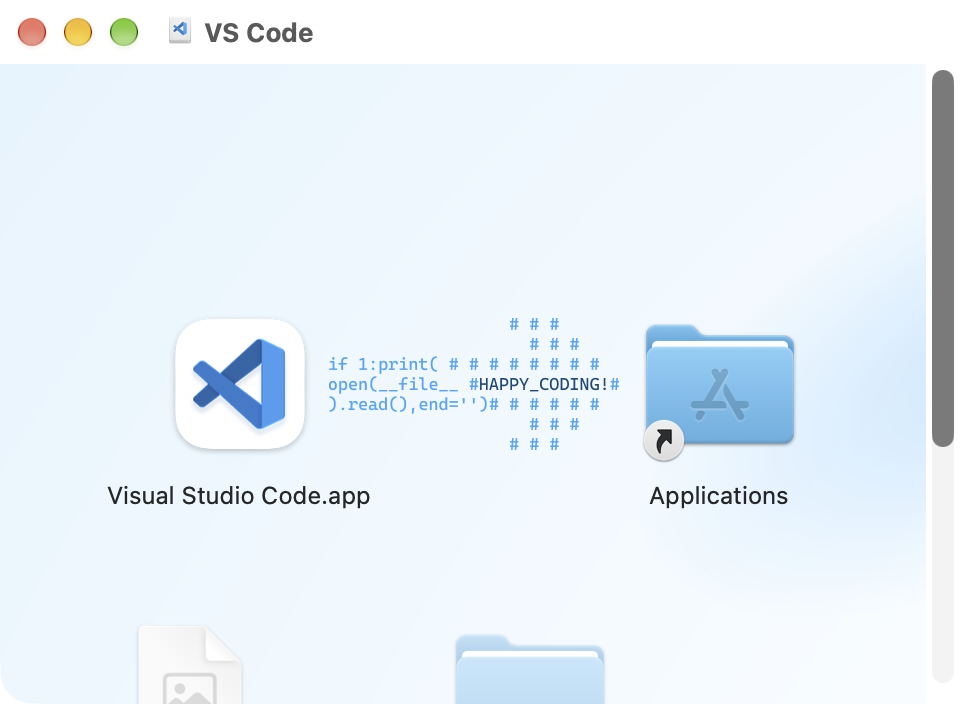
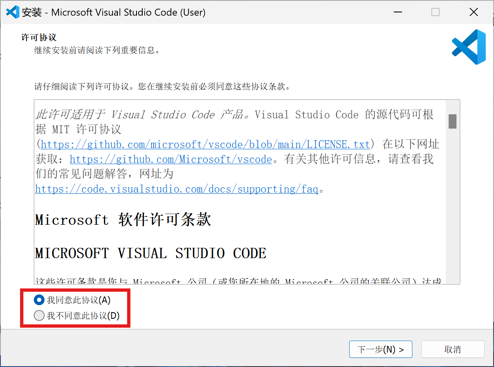
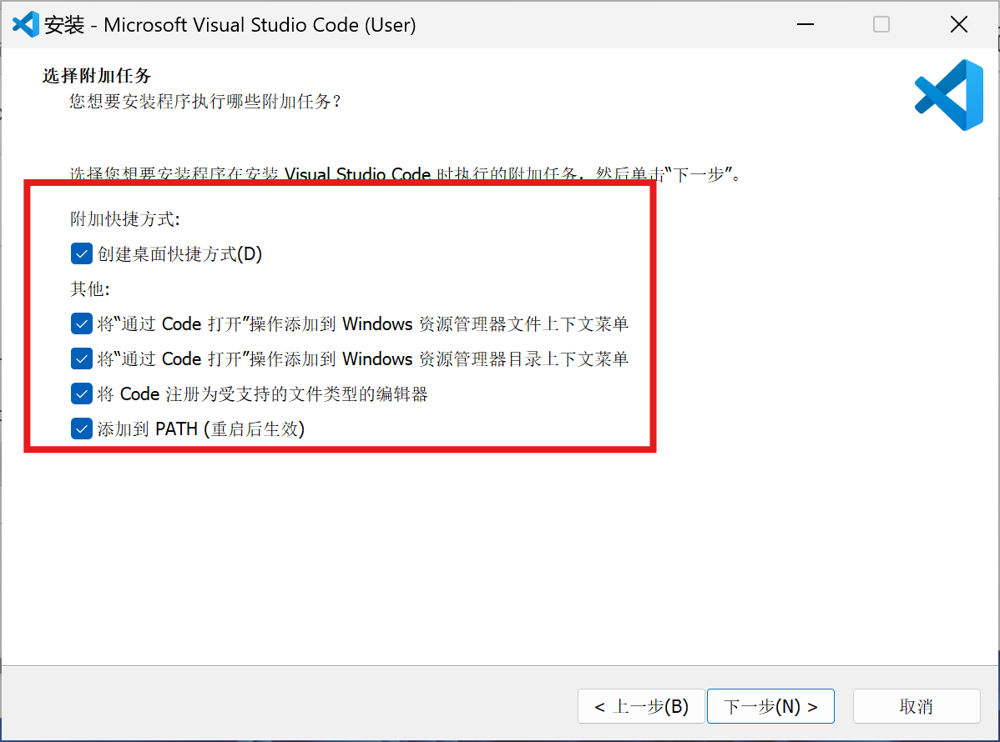
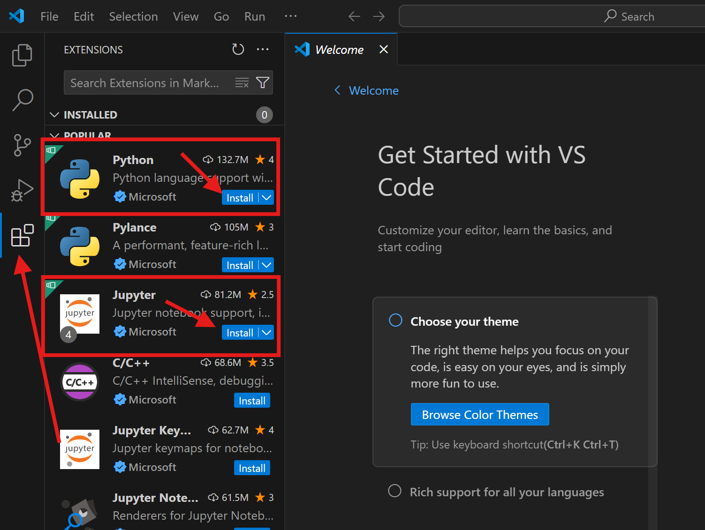
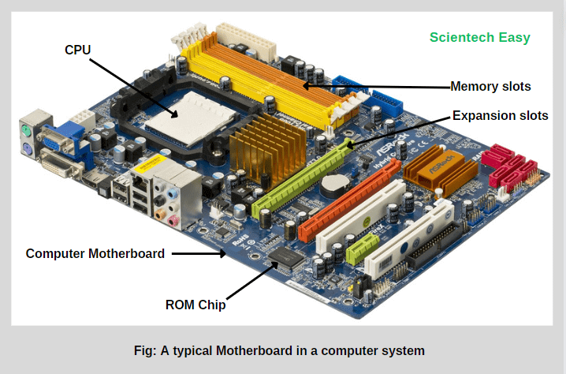
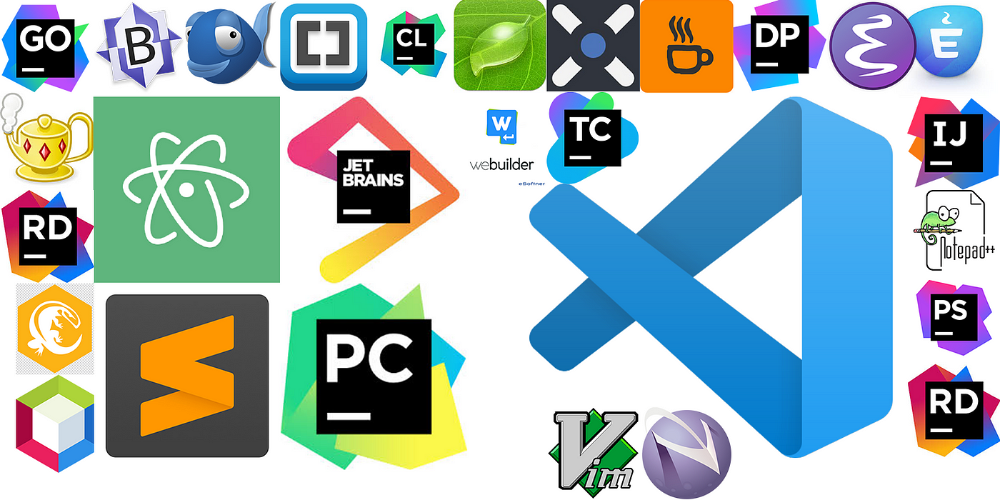

<p style="font-size: 16px; color: #999; margin:5px; position: absolute;"><a href="..">Homepage</a> | <a href="?print-pdf">Printable Version</a></p> <div style="display: flex; justify-content: center; align-items: center; height: 700px;"> <div style="text-align: center; padding: 40px; background-color: white; border: 2px solid rgb(0, 63, 163); border-radius: 20px; box-shadow: 0 0 20px rgba(0,0,0,0.1);"> <h1 style="font-size: 48px; font-weight: bold; margin-bottom: 20px; color: #333;">SI100B Fall 2026 Recitation 1</h1> <p style="font-size: 24px; color: #666;">环境配置 & 正确地使用搜索引擎</p> <p style="font-size: 16px; color: #999; margin-top: 20px; margin-bottom:5px">SI100B 2026 Staff | 2026-09-18</p> </div> </div> <!--s--> <div class="middle center"><div style="width: 100%"> # Part.0 在开始配置环境之前 </div></div> <!--v--> ## 有关计算机基本操作的推荐阅读 [你缺失的那门计算机课](https://www.criwits.top/missing/) 入门：计算机快速上手 [MIT: Missing Semester](https://missing-semester-cn.github.io/) 进阶：需配置好 Bash 环境 <!--v--> ## 前言 如果你上过 SI100+： - 那么你可能已配置好和本教程一致的编程环境 - 为保险起见，仍然建议你跟一遍 如果你没上过，但做过正课上的动手尝试环节 - 那么你可能安装了其他 Python 环境（独立的 Python 安装包或 Pycharm 等） - 如果是，请仔细阅读本教程 <!--v--> ## 出发之前可能遇到的问题 - 检查你的用户名是否为英文，中文用户名可能导致安装软件时出现问题 - 打开 PowerShell，输入 `whoami`, 输出中不应该包含中文字符 - 我们将展示 Windows 11 操作系统下的步骤，如果你使用其他操作系统，可以询问使用对应操作系统的助教 - 如果你遇到任何问题，请在 Piazza 或 Office Hour 求助，助教们都乐意帮助你 🥰 <!--v--> ## 我们将要配置什么？ 在本教程中，我们将配置一套可以用于 SI100B 课程的环境： **uv + Jupyter Notebook + VS Code** - uv: 快速的 Python 版本和环境管理器 - Jupyter Notebook：一个交互式笔记本，可以融合代码、文本、图像等多种元素 - VS Code：~~最好的~~代码**编辑器**，拥有丰富的插件生态，支持多种编程语言 <!--s--> <div class="middle center"><div style="width: 100%"> # Part.1 安装 </div></div> <!--v--> ## 安装 VS Code - 官网下载安装包： - 打开 VS Code 官网：[`https://code.visualstudio.com`](https://code.visualstudio.com) - 下载对应系统的安装包（Windows 是 `.exe`，macOS 是 `.dmg`，Linux 可用 `.deb` / `.rpm` 等） - macOS 需要打开 `dmg` 文件之后将 VS Code 拖动到 Application 即可 <p></p> <!--v--> ## 安装 VS Code - 或者用自带的包管理器（注意网络环境，可以自行搜索） - macOS 可用 `brew` 或者自带应用商店 - `brew`安装： ```bash /bin/bash -c "$(curl -fsSL https://raw.githubusercontent.com/Homebrew/install/HEAD/install.sh)" ``` - 通过`brew`安装VS Code： ```bash brew install visual-studio-code ``` - Windows 可以用 `winget` <!--v--> ## 安装 VS Code - 打开浏览器，访问 [VS Code 官网下载页面](https://code.visualstudio.com/Download)，选择对应你的操作系统的版本下载 <img src="images/vscode_download.png" width="80%" style="display: block; margin: 0 auto;"> <!--v--> ## 安装 VS Code - 下载完成后，运行安装程序 - 点击同意协议 <p></p> <!--v--> ## 安装 VS Code - 选择安装位置 - 如果不确定要安装到哪个位置，就用默认的位置 <img src="images/vscode_install_2.png" width="50%" style="display: block; margin: 0 auto;"> <!--v--> ## 安装 VS Code - 在选择附加任务的界面，将下图红框中的选项勾选上 <p></p> - 继续一路点击，完成安装 <!--v--> ## 安装 VS Code 插件 - 打开 VS Code，点击左侧边栏的 Extensions 图标 - 我们需要安装 Python 和 Jupyter 这两个插件 - 如果侧边栏没有自动推荐这两个插件，可以在搜索框中搜索并安装 <p></p> <!--v--> ## 安装 uv **Plan A: 官方脚本**： - macOS / Linux： ```bash curl -LsSf https://astral.sh/uv/install.sh | sh ``` - Windows (PowerShell)： ```powershell powershell -ExecutionPolicy Bypass -c "irm https://astral.sh/uv/install.ps1 | iex" ``` - 装完用 `uv --version` 验证。 <!--v--> ## 好像不对…… **常见问题**：官方安装脚本本质是从 GitHub 下载编译好的二进制文件，国内网络环境下 GitHub 经常连不上或卡住不动，导致安装长时间无响应或直接报错超时。 - 校内网有针对 Github 的加速，一般可以直接正常下载。 **Plan B：GitHub 加速镜像** - Windows: ```powershell $env:UV_DOWNLOAD_URL = "https://ghfast.top/https://github.com/astral-sh/uv/releases/download/0.12.16" powershell -ExecutionPolicy Bypass -c "irm https://astral.sh/uv/install.ps1 | iex" ``` - MacOS: ```bash export UV_DOWNLOAD_URL="https://ghfast.top/https://github.com/astral-sh/uv/releases/download/0.12.16" curl -LsSf https://astral.sh/uv/install.sh | sh ``` <!--v--> **Plan C**（如果电脑上已经有任意版本的 Python，不推荐）： ```bash # 不推荐 pip install uv -i https://pypi.tuna.tsinghua.edu.cn/simple ``` **Plan D** - Windows: `winget install --id astral-sh.uv -e` - MacOS: `brew install uv` - Linux: 自带包管理器(Eg. `apt`, `pacman`, ...) **Finally** - 终端输入 `uv --version` 回车：`0.12.16` <!--v--> ## 换源 - uv 默认会去官方 PyPI（国外服务器）下载库，国内网络下经常很慢 - 镜像源（Mirror）是国内对各种库和包的“备份”，可以起到加速作用 - 参考：[校园网联合镜像站使用帮助 - PyPI](https://help.mirrors.cernet.edu.cn/pypi/) - 配置方法： - Linux/Unix：在 `~/.config/uv/uv.toml` 或者 `/etc/uv/uv.toml` - Windows：在 `%AppData%\uv\uv.toml` 或者 `%ProgramData%\uv\uv.toml` 填写下面的内容： ```toml [[index]] url = "https://mirrors.cernet.edu.cn/pypi/web/simple" default = true ``` <!--v--> ## 一键换源 Windows: ```powershell mkdir -Force $env:APPDATA\uv; "[[index]]`nurl = 'https://mirrors.cernet.edu.cn/pypi/web/simple'`ndefault = true" | Out-File $env:APPDATA\uv\uv.toml -Encoding utf8 ``` Linux / MacOS ```bash mkdir -p ~/.config/uv && echo -e "[[index]]\nurl = \"https://mirrors.cernet.edu.cn/pypi/web/simple\"\ndefault = true" > ~/.config/uv/uv.toml ``` <!--s--> <div class="middle center"><div style="width: 100%"> # Part.2 这些都是什么？ </div></div> <!--v--> ## 什么是环境？ - 桌面快捷方式双击后打开的其实是硬盘里另一个位置的文件；如果原文件被删/挪走，双击会报错"找不到目标"。 - 快捷方式本身不是程序，只是一张写着"真正的东西在那边"的小纸条。 - 双击 = 系统帮你查这张纸条 → 找到路径 → 打开真正的文件。这个过程是系统在背后悄悄做的一次"指路"。  <!--v--> ## 什么是 PATH - 环境变量：像是操作系统的“全局公告板”或“便签纸”。电脑里的所有程序在运行时，都可以随时抬头去上面查看公共信息（比如你是谁、临时文件放哪、常用软件在哪找），而不用在代码里把这些信息死死写死。 - **环境变量**：系统/程序运行时读取的全局设置项，不同终端窗口、不同用户之间可能不一样。 - `PATH` 是一种特殊的**环境变量** - 想象不是一张纸条指一个文件，而是桌上放着一份很长的名单，写着十几个文件夹地址，按顺序排好。当你在终端敲一个词，比如 `python`，系统不知道它是哪个文件、放在哪——于是拿出这份名单，按顺序一个文件夹一个文件夹地找，谁先命中就用谁，后面不再找。" - 这份名单，就是 **PATH**。 <!--v--> ## 真假 Python - 操作系统怎么知道 `python` 这个命令对应哪个程序？ - 按顺序在 `PATH` 里查找 - 演示： - 打开系统的终端 - `echo $PATH`（macOS/Linux）或 `echo $env:PATH`（Windows PowerShell） - 我们也可以通过 `where`（Windows） 或者 `which`（macOS/Linux）来显示系统到底找到的哪一个 `python` - 演示： - `which python` / `where.exe python` <!--v--> ## ⚠️：不要安装多个 Python <div style="margin-top: 10px; margin-right: 10px;" markdown="1"> <img src="images/python_environment.png" width="55%" style="float: right;"> <br/> - 不同的项目可能需要不同的 Python 版本 - 不同的 Python 版本又可能需要不同版本的库 - 有没有工具可以让我们在不同的 Python 环境之间自由切换？ - 💡这就是我们今天要解决的！ </div> <!--v--> ## uv 和 虚拟环境 - 项目 A 是照着旧版本的某个库写的，项目 B 用的是新版本，新版本改了用法…… - 如果整台电脑只让你装一份这个库，装了新的，旧项目可能报错跑不动；装了旧的，新项目又用不上新功能…… - **虚拟环境**（virtual environment）——给每个项目一个独立的、互不干扰的 Python 副本 + 库安装目录。 - 历史脉络：`venv`、`pip`、`virtualenv`、`pipenv`、`poetry`、`conda`……现在越来越多人转向 **uv**，因为它整合了这些功能且速度快很多 - uv: 速度极快的 **Python 包与项目管理工具**，目标是一个工具替代 `pip`、`venv`、`pipx`、`pyenv`、`poetry` 的大部分功能 - 装包速度比 `pip` 快 10-100 倍 - 虚拟环境应该以什么为单位？ <!--s--> <div class="middle center"><div style="width: 100%"> # Part.3 文件夹思维 </div></div> <!--v--> ## 何为：文件夹思维？ - **旧思维**： - Python 是装在电脑里的东西，写一个 `.py` 放桌面，双击打开或运行 `python xxx.py` 就能跑 - 需要什么包就全局安装 `pip install` - 整台电脑只有 **"一个"** Python，文件东丢西放，互不隔离 - **新思维**（这堂课要建立的习惯）： - **一份工作 = 一个文件夹（项目）** - 文件夹里装着代码本身、一份"需要什么"的清单（`pyproject.toml`）、以及专属这个文件夹的 Python 环境（`.venv`） - 永远不单独运行 Python，只在**某个项目里**跑 Python - **项目以文件夹为单位** <!--v--> ## 体验 VS Code 中的文件夹思维 - 前情提要：VS Code 是一个"编辑器"（写代码、看代码、点按钮操作的界面），它本身**不会**执行 Python 代码——真正执行代码的是电脑上装的 Python 解释器。 - VS Code 里有两种打开方式，**我们几乎总是要用后者**： - "Open File"（打开单个文件） - "Open Folder"（打开一个文件夹，也叫"工作区" / Workspace）。 - 演示： - 新建并打开课程文件夹 - 打开终端 <!--v--> ## 用 uv 管理你的环境 1. **管理 Python 版本本身**：uv 能帮你装/切换不同 Python 版本 - `uv python install 3.12` 装 3.12 版本的 Python - `uv python list` 列出可用的 Python 2. **创建新项目**：`uv init myproject`，自动生成一些初始文件： - `pyproject.toml`：项目配置和依赖声明，`.python-version`：版本声明 3. `uv venv`（可选）：创建一个崭新的虚拟环境 4. **`uv sync`** ：安装项目所需的依赖 - `uv.lock`：记录精确版本号，保证"别人电脑装出来的环境和你一模一样" - 别人克隆你的项目后，**只用一条命令就能按 lock 文件/声明文件精确复现环境** 5. **用 VS Code 打开这个项目/文件夹**： - `code .`（终端唤起 VS Code 并打开当前文件夹），或者手动 Open Folder 6. **加依赖**：`uv add pyjokes`，观察 `pyproject.toml` 和 `uv.lock` 的变化。 7. **运行代码**：`uv run python main.py` 或 `uv run main.py` <!--v--> ## uv 是如何让环境生效的？ - 虚拟环境在哪里？——`.venv` 文件夹 - 如何实现的切换环境？ - 演示： - 终端打开文件夹，查看 `PATH`、寻找 `python` 位置 - 手动激活环境：`source .venv/bin/activate`(macOS/Linux) / `.\.venv\bin\activate.ps1`(Windows) - 再次查看 `PATH`、寻找 `python` 位置 - 可见，他通过修改了环境变量来实现运行不同的 Python <!-- .element: class="fragment" --> - （实际上还有一些变化，这里不再赘述，感兴趣的同学可以自行探索，期待你在 Piazza 上面发贴展示你的探索结果！）<!-- .element: class="fragment" --> <!--s--> <div class="middle center"><div style="width: 100%"> # Part.4 在 VS Code 中使用 Jupyter Notebook </div></div> <!--v--> ## VS Code 打开文件夹 - 在桌面或者其他地方新建一个文件夹，命名为 `Recitation1` 或者其他你喜欢的名字 - 将 Piazza 上的本课的压缩包**完全解压**并移动到 `Recitation1` 文件夹中 - 打开 VS Code，在 VS Code 中点击顶部菜单栏的 File `->` Open Folder，打开刚刚新建的 `Recitation1` 文件夹 - 打开 VS Code 自带的终端，输入 `uv sync` 并回车，根据文件夹自带的项目文件同步依赖和创建环境 - 点击左侧边栏的 `.ipynb` 文件，即可打开文件 - 选择 Kernel 里，找到我们的环境 - 运行 Notebook！ <!--v--> #### 到此，我们的环境配置初步完成。 非常感谢 SI100B、SI100+ 等先前课程同学提供的相关资料。 <!--s--> <div class="middle center"><div style="width: 100%"> # Administrivia 课程管理说明 </div></div> <!--v--> ## 关于作业和考试 本学期 SI100B 的 Python 编程 (Python Programming) 部分共有 3 次作业 - 成绩通过在线评判机（Online Judge，简称 OJ）进行评判； 另外还有 1 次考试，预计在期中前后通知 <!--v--> ## 关于作业：续 请每位同学**独立**完成作业：如发现有抄袭行为，将按学校规定处理。 不要让 ChatGPT 等 AI 大模型替你完成题目！ - 不仅违反规定，也违背作业的目的：回顾和练习。 <br> ##### **Recall:** - **Do s:** all work should be done **individually and independently** - **Don't s:** - **copy** from the web or others (**including AI tools**); - **give or expose** your code to others; - make your code **public** <!--s--> <div class="middle center"><div style="width: 100%"> # 正确地使用搜索引擎 </div></div> 内容改自 SI100B Fall 2024 习题课 <!--v--> ## 为什么使用搜索引擎？—— 你应该开始搜索的 101 个理由 - 你现在真的遇到问题了，而遇到问题就应该**解决问题** - 网上很可能有这个问题的解决方案 - 只靠自己摸索不一定能解决问题 - 可能会搜索到高于这个问题的更深入的知识，扩充你的知识面 - 搜索没有任何的代价 - 这一次没有搞懂，下一次还要再费时间 - 别人通常没有义务帮你解决问题，你应该感谢他们的帮助，但是搜索引擎无所谓！ - 找出思路里面潜在的错误 - ...... <!--v--> ## 通用的搜索引擎 这些搜索引擎可以解决大部分问题 - Google - Bing（海外版） - CN Bing 国内版/百度（仅适合搜索中文社区内容，如“百度贴吧”） - 百度等中文搜索引擎，编程相关的结果存在较多 AI 洗稿和无意义回答，请注意甄别 <!--v--> ## 如何搜索——关键词 - 搜索一大段描述文字，结果通常不尽人意 - 搜索引擎有分词功能，但效果有限 - 长句子即便分词后也有很多杂音 - 清除冗余：搜索 “我该怎么用工具 x 做出 y?” `->` 搜索 “x y” - 空格分隔关键词，视情况选择具体的还是更抽象的关键词 - 根据搜索结果调整关键词 - 结果不应包含某些关键词，那就去掉； - 结果给了你新的启发，那就加入相关的关键词； - 根据结果不断迭代： - 内容太老旧 `->` 限制搜索时间/加年份关键词/加软件版本号 - 名字一样，但是不是你要搜的领域的东西 `->` 加上领域关键词 - ...... <!--v--> ## 搜索引擎的高级功能 以 Google 为例，其他搜索引擎使用方式类似 <div style=" margin-top: 10px; margin-right: 20px; margin-left: 20px" markdown="1"> | 功能 | 语法示例 | 说明 | |------------|--------|--------| | 强制包含关键词 | `"Python tutorial"` | 使用半角双引号，结果须完全包含引号内的词组 | | 强制排除关键词 | `Python -Java` | 在词组前加减号，结果中不会出现被排除的词 | | 模糊匹配 | `Python * tutorial` | 星号 `*` 可匹配任意单词，如可能给出 `Python science tutorial` 的结果| | 限制搜索网站 | `site:python.org Python` | 只在指定网站中搜索 | | 限制搜索文件类型 | `filetype:pdf Python` | 只搜索特定文件类型（如 PDF） | 也可以使用浏览器插件实现相关功能。 </div> <!--v--> ## AI 工具 **常用站点** - Microsoft Copilot / GitHub Copilot - ChatGPT、DeepSeek、通义千问 等专门对话的 AI - 上科大同学可免费使用校内 GenAI 平台：https://genai.shanghaitech.edu.cn - 课程中（可能）会教学如何使用 AI 工具，如辅助编程 - 再次提醒：用 AI 代写作业**违反课程规定！** <!--v--> ## 如何正确使用对话大模型 - **向大模型提问的正确方式** - 搜索引擎的“关键词”式搜索不一定合适 - 用更加详细的方式描述 - 任何要求都要写清楚 - 有些时候，说“不应该怎样”反而会加强错误 - **什么适合问大模型？** - 概览性问题 “请总结/简要介绍…” - 已有大量数据的问题/常识 “Python的循环体通常有哪些？” - **注意：**大模型可能出现幻觉，给出错误数据或不存在的证据 - 编造某些具体数据、参考文献等 <!--s--> <div class="middle center"><div style="width: 100%"> # Python 程序运行的背后：计算机基本构成和运行原理 </div></div> <!--v--> ## 计算机的构成 <div style=" margin-top: 10px; margin-right: 10px;" markdown="1"> <p></p> 一台计算机通常含有如下组件： - 中央处理器（CPU）：核心组件，提供运行所需的基本计算能力 - 内存（RAM）：临时储存，速度相对较快，断电后其上数据丢失 - 硬盘（Hard Drive）：有固态 (SSD)，机械 (HDD) 等不同种类；大容量储存，速度相对较慢，断电后其上数据仍保留 - 显卡（GPU）：擅于图形渲染，，批量小规模计算（如矩阵）和并行处理，但计算能力远不如 CPU 通用 - 电源（Power Supply）：向主板（以及显卡）直流供电 - 主板（Motherboard）：卡槽和总线，连接各个部件，提供外部接口（USB、耳机口），可能带有网卡、wifi天线等等 - 风扇：（主要给CPU）散热；显卡往往有独立的散热系统 </div> <!--v--> ## 拓展：程序是什么 - 在计算机的最底层，所有东西都是**二进制**表示 - 不同的文件种类，只是**编码 (Encoding)** 不同 - 内存同时存储了**程序**和**数据** - **程序 (Program)** 是装有可执行的机器码的文件 - 机器码 (Machine code)：可以当作是 能被计算机最底层直接理解的操作（最为原始、不加任何修饰的指令），目前不需要深入了解 - 大部分程序装载到内存中可直接执行，因此也称**可执行文件 (Executable file)** - **数据** 在这里指不能被执行，但可被程序所利用的数据（比如变量） - 程序的工作：由给定的输入计算对应的输出，相当于数学上的**函数** <!--v--> ## 拓展：程序是什么（续） - Python 是一种 解释型语言 (Interpreted Language) - 我们编写的代码文本文件称**脚本 (Script)** ，终端调用的 `python` 称为**解释器 (Interpreter)** - 运行时，解释器将脚本中的语句逐条翻译为机器码并执行 - 相对地，有 编译型语言 (Compiled Language) - 程序需要先全部翻译为机器码，然后才能执行，执行效率比前者更高 - 一些程序不一定能直接执行，但包含许多可被其他程序重复使用的代码 - 称为**库 （Library）** - 可能是文本形式的代码（如 Python module），也可能是二进制的机器码（如 C++ 的动态链接库） - Python 中，打包好的库常以 Python 软件包（package）的形式安装和使用 <!--v--> ## VS Code 与 Python - VS Code 是**代码编辑器**。其核心部分为文本编辑器（与记事本同类） - 它**不是 IDE（集成开发环境）**：不能仅用它来直接开发程序 - Python 解释器是独立于它存在的（比如，你可以在终端直接运行 `python3`） - VS Code 内置或可添加许多有利于编程的功能： - 内置了代码高亮、括号匹配等功能 - 安装对应插件，可为编程语言提供更全面的支持 - 编辑器和 IDE 都可以统一管理项目文件，并配合外部工具实现版本控制和可视化调试等功能 <p></p> <!--v--> ## Facts about Python - 'The Zen of Python': 输入 `import this` - 来自 1989 年 Guido Van Rossum 在圣诞节期间的业余项目 - 得名于喜剧片 Monty Python’s Flying Circus《巨蟒与圣杯》，不单单是蟒蛇 - Python 程序可以被编译成其他语言，（包括C、Javascript、Julia），或者直接编译为机器码 - Python 执行性能通常不如 C/C++/Java 等，但有部分第三方库使用其他语言编写以实现高效运行（e.g. numpy 库底层使用了 C 语言编写） <!--s--> <div class="middle center"><div style="width: 100%"> # 课堂知识回顾 1 </div></div> <!--v--> ## Imperative vs. Declarative - 命令式 (Imperative) 编程：告诉计算机要怎么做 (How) - 程序员拥有更高的自由度，但需要管理每一步的状态，工作量大 ```python # 求数组 arr 中所有元素的和 total = 0 for i in arr: total += i ``` - 声明式 (Declarative) 编程：声明我们想要的结果 (What) - 具体实现由其他人完成并交给编译器或解释器来处理 - 程序员只需专注于目标本身的逻辑 ```python # 求数组 arr 中所有元素的和 total = sum(arr) # 他人已实现一个求和的功能，拿来用即可 ``` <!--v--> ## Computers are Machines that Executing Algorithms 计算机是执行算法的机器 - 算法 (Algorithm) : 需要按次序执行的一系列计算操作 - 相当于食谱/制作配方（只不过有时很复杂） - 本课程目前涉及的算法大多较为简单直观 - 学习更一般且有难度的算法: CS101 算法与数据结构 - 计算机的架构: 冯·诺依曼 (Von Neumann) - Fixed Program (固定程序) vs. Stored Program (存储程序): 程序不可再修改 vs. 程序可再修改 - 架构图: Memory 内存, Control Unit 控制单元, Arithmetic Logic Unit 算术逻辑单元, Input 输入, Output 输出 <!--v--> ## Syntax & Semantics - 句法 (syntax) : 句子的形式或结构 - 词位 (lexeme) : 最基本的语法单位(eg. I, dog, hugs，+, =) - token: 描述词位的种类 (eg. keywords，operators) - 语义 (semantics) : 句子含义 - 无语法错误和无静态语义错误：静态分析通过 - 这**不代表**程序能按照预想的执行 - “运行的时候没有红字报错，但出来的结果就是不对” - 语义难以准确传递：甲方/题目 -> 程序员 -> 代码 - 更高阶的知识： CS131《编译原理》（CS 专业选修） <!--v--> ## 类型转换 (Type Conversion) - 显式 (Explicit) 转换: 需要手动指定转换类型 - e.g. `str()`,`int()`,`float()` - 隐式 (Implicit) 转换: 在解析时自动转换 - “不按照预想的执行”：“怎么输出都跟了个 .0？” - 通常向上转换类型，以防止数据丢失 ```python num1 = 2 num2 = 12.2 res = num1 + num2 print("Data type of res: ", type(res)) # Output: <class 'float'> print("Value of res: ", res) # Output: Value of res: 14.2 ``` <!--v--> ## 类型转换 (Type Conversion) 续 - 隐式 (Implicit) 转换是某些不同类型数据能够“兼容”的原因 - 并非所有数据类型都互相“兼容” ```python num1 = "2" num2 = 3 print(num1 + num2) # TypeError: unsupported operand type(s) for +: 'int' and 'str' ``` <!--v--> ## 字符串 - Python 内置字符串的类型为 `str`. - 字面量可以使用单引号或双引号 `''`, `""`, 使用三引号可跨越多行 `'''`, `"""` ```python multi = """It was the best of times. It was the worst of times.""" ``` - 在布尔类型中，空字符串 `''` 被当作 `False` - 其他常见的被视为 `False` 的值：`None`, `0`, `[]`, `{}` ```python # the statement executes only if myString is not empty if not myString: statement ``` <!--v--> ## 字符串（续） - 切片：`[start:stop:step]` - `start`: 起始索引位置（Python 索引以 0 起始！） - `stop`: 终止索引位置（不包含） - `step`: 步长 - 如索引超出字符串长度，会限制在长度内 ```python s = "0123456789" print(s[1:4]) # Output: 123 print(s[1:100]) # Output: 123456789 print(s[1:10:3]) # Output: 147 print(s[100:]=='') # Output: True (is an empty string) ``` <!--v--> ## 格式化字符串 - 使用格式化字符串 (f-string) 可提高代码可读性，以及便于打印调试信息 ```python # 控制浮点数显示的小数位数 value = 2.791514 print(f'approximate value = {value:.2f}') # Output: approximate value = 2.79 # 格式化字符串支持表达式插入 width = 10 height = 5 area_message = f"The area is {width * height}." # Output: The area is 50. ``` <!--s--> <div class="middle center"><div style="width: 100%"> # 课堂知识回顾 2 </div></div> <!--v--> ## 基本输入和输出 - 输入/输出 (Input/Output) 简写为 I/O - Python 内置了许多函数来实现这点 - `input()`: 从标准输入 (stdin) 获取数据 - `print()`: 打印到标准输出 (stdout) - 终端就属于符合标准输入和输出的一类 <!--v--> ### `input` 输入 - `input()` 如果有参数，则会先打印出来再接受输入 - 编程作业时要注意，否则容易意外输出 - `input()`输入的数据总是为字符串，即使输入是纯数字 ```python-REPL >>> s = input("Please input s:") Please input s:100 # printed its argument first >>> type(s) <class 'str'> # type of input is always string ``` <!--v--> ### `input` 输入 - 如何处理同时输入多个内容？---`split()` - 通过指定分隔符对字符串进行切片，并返回分割后的字符串列表。 ```python-REPL >>> a, b = input("Please input a and b: ").split(';') Please input a and b: 100;200 ``` - 如何将输入快速用于运算？---`map()` ```python-REPL >>> a, b = map(int, input("Please input a and b: ").split(';')) Please input a and b: 100;200 >>> type(a) <class 'int'> # The input type changed from string to integer ``` <!--v--> ### `print` 输出 `print` 的多种用法（以下 `x = 1.5`） - 基本：打印字符串 - `print("Hello, world!")` - 多个参数将连接起来，默认在中间加空格： - `print("x =", x)` 输出 `x = 1.5` - 前面提及的格式化字符串 - `print(f"x = {x}")` 输出 `x = 1.5` - `print(f"x = {x:.2f}")` 输出 `x = 1.50` - `print("x={}".format(x))` 输出 `x = 1.5` 上面这些已经足够使用了 - 想查看更具体的用法：[官方文档页面](https://docs.python.org/zh-cn/3/reference/lexical_analysis.html#string-and-bytes-literals) 。 <!--v--> ## 逻辑判断 - **逻辑运算符** 运算结果是一个布尔型 (`bool`) ：`True` 或 `False`（注意大小写） - `==` 等于 **注意和赋值运算符 `=` 区分** - `var = value` 是赋值运算 - `expression1 == expression2` 是逻辑运算（是否相等） - `!=` 不等于 - `>` 大于 - `<` 小于 - `>=` 大于等于 - `<=` 小于等于 <!--v--> ## 条件分支：`if`, `elif`, `else` 示例：猜数字 ```python # Guess number number = 13 guess = int(input("Enter an integer: ")) if guess == number: print("Congratulations, you guessed it.") elif guess < number: print("No, it is a little bigger than that.") else: print("No, it is a little smaller than that.") ``` <!--v--> ### 拓展：Match-case Statement - 于 **Python 3.10** 引入，类似 C/C++ 的 `switch case`结构 - 将一个变量与不同的**字面值**（Literal，即明文写在代码中的值）匹配 - 从上到下依次将变量与每个 `case` 的值比较 - 一旦匹配到某个 `case` 就执行对应的语句，且不再往后检查剩余的 `case` - 如果没有任何 `case` 匹配，则执行最后的默认情况 `_` ```python light_color = input("Enter a traffic light color") match light_color: case "red": print("Red: Stop") case "yellow": print("Yellow: Caution") case "green": print("Green: Go") case _: print("Invalid color") ``` <!--v--> ### 拓展：Match-case Statement - Match-case Statement 还可用于绑定 (bind) 变量 - 对一个值进行绑定，类似于为它们再取一个名 - 示例：`point` 是形如 `(i,j)` 的一对数字 ```python match point: case (0, 0): print("Origin") case (0, y): print(f"Y={y}") # this case: bind the second element to y case (x, 0): print(f"X={x}") # this case: bind the first element to x case (x, y): print(f"X={x}, Y={y}") case _: raise ValueError("Not a point") ``` - 相关 Python 规范：[PEP636](https://peps.python.org/pep-0636/) <!--v--> ## 循环：`while` ```python while condition: statements ... ``` - **注意：** `while` **仅在每次开始执行** `statement` 时才检查 `condition` - 设置合理的条件，以避免出现异常情况： - 死循环：检查 `condition` 时总是为 `True`，循环无限进行，不会停止 - 无效循环：首次进入循环时检查 `condition` 为 `False`，没有执行其中语句就退出了 <!--v--> ## 循环：`for` `for` 循环体通常用于遍历 (Traverse) 一个**序列** (Sequence) 或其他可迭代 (iterable) 对象 - 本课程中常见的序列包括 字符串 (String)、列表 (List)、元组 (Tuple) 等，后面课程会全部讲到 ```python for i in range(5): # range(5) is a list [0,1,2,3,4] print(i) for i in "hello": print(i) ``` <!--v--> ## 循环：循环控制 - `break`：立即跳出当前的循环体，继续执行循环体之后的语句 - `continue`：立即跳过当前循环体的剩余语句，继续进行下一次循环 ```python a = 0 while a >= 0: print("new loop starts, a =", a) if a > 1024: break # jump to print("break out of while loop") elif a > 512: a = a + 2 continue # jump to print("new while loop start") print("a <= 512") a = a + 4 print("break out of while loop") ``` <!--v--> 示例：猜数字（循环直到猜对） ```python # Guess number number = 13 guess = int(input("Enter an integer: ")) while True: # loop until guessed if guess == number: print("Congratulations, you guessed it.") break # break loop if succeed elif guess < number: print("No, it is a little bigger than that.") else: print("No, it is a little smaller than that.") ``` <!--s--> ## 答疑时间：课堂知识和环境配置 - 考虑到录制质量问题，习题课一般无录播，但会在 BlackBoard 平台上传 Slides - 下周习题课预计会讲解基本的代码编写风格 (Coding Style)，帮助养成习惯 - 第一次作业预计在下周布置，届时请务必配置好编程环境 - **Good Luck!** <!--s--> <div style="display: flex; justify-content: center; align-items: center; height: 700px; "> <div style="text-align: center; padding: 40px; background-color: white; border-radius: 20px; box-shadow: 0 0 20px rgba(0,0,0,0.1);"> <div style="display: inline-block; padding: 20px 40px; border-radius: 10 px; margin-bottom: 20px;"> <h1 style="font-size: 48px; font-weight: bold; margin: 0; color: rgb(16, 33, 89)">Thanks for Listening</h1> </div> <p style="font-size: 24px; color: #666; margin: 0;">Any questions?</p> </div> </div>